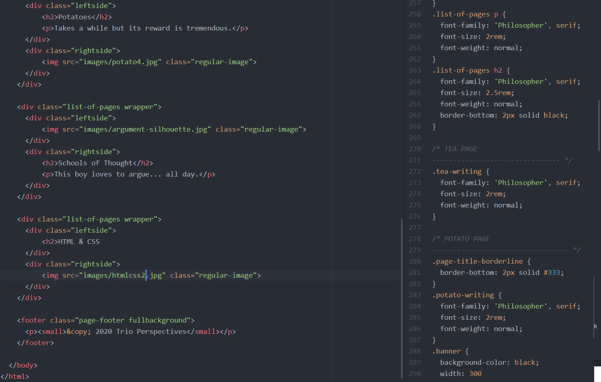

HTML (the Hypertext Markup Language) and CSS (Cascading Style Sheets) are two of the core technologies for building Web pages (w3c.org).
(The left side is HTML and the right side is CSS)
Technically, these are not programming languages so they are simple and you can easily learn them in about a week. You can even publish your website! Although keep in mind that for the website to be interactive, you do have to learn a server-side programming language such as JavaScript or PHP. Those will enable elements on the website to move and change in response to the user’s action.
Project Trio Perspectives started on June 16, 2020 and was officially published on June 21, 2020. I learned the basic syntax of the languages on a website called Progate, and as a reference, I bought a book titled "HTML & CSS と Webデザイン" written by Mana.
Not only does it cover HTML & CSS, but it also covers Web designing. Unfortunately, the simplistic design of this website is mainly due to my lack of skill and is not necessarily intentional. But do realize that even writing a few sentences next to an image like this takes a bit of formatting. Every little detail of this website is typed up manually.
If you were to start learning programming for the first time, I would definitely recommend HTML & CSS. These two languages together can create any websites you have seen on the internet. The learning curve is not as steep as it looks. It is just learning some syntax and a lot of tedious work.